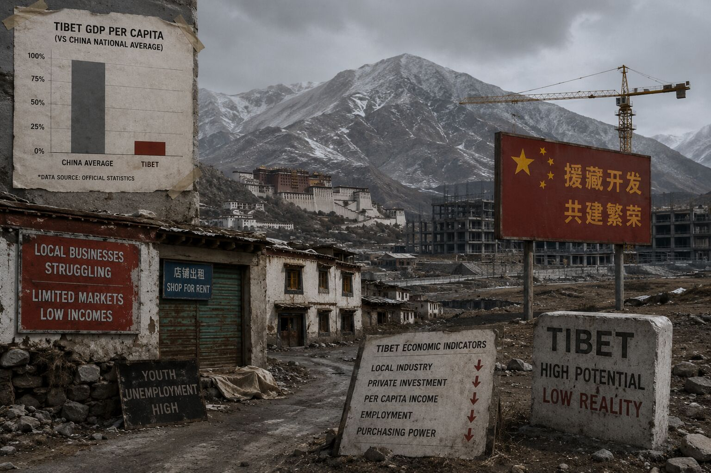
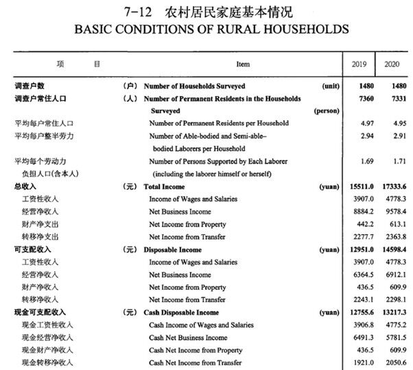
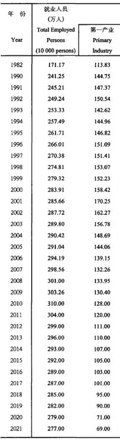
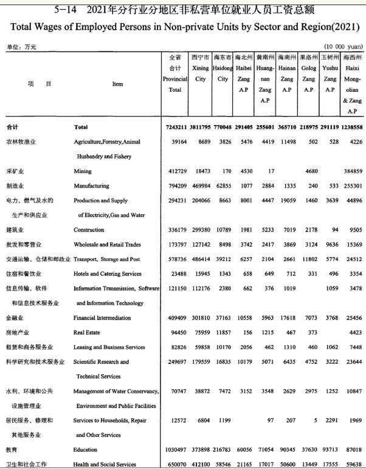
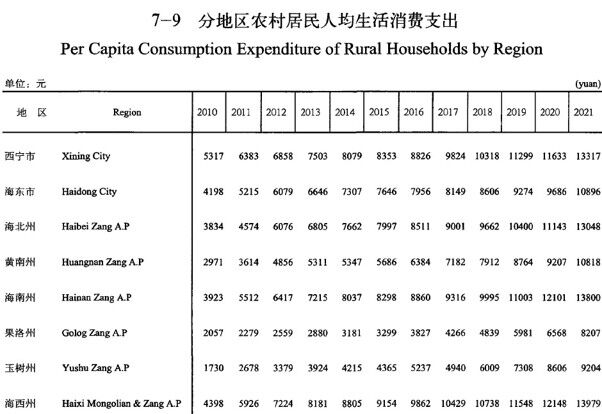
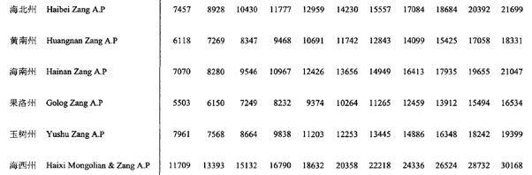

The Political Economy of Tibet Under the People’s Republic of China
A favourite topic among Chinese economists is comparing provinces. Since all 31 provinces and ‘autonomous regions’ annually publish a statistical report, usually at least 1,000 pages each, there is plenty of basis for comparing growth, consumption, productivity, which industries are flourishing, wealth accumulation, and much more.

A favourite topic among Chinese economists is comparing provinces. Since all 31 provinces and ‘autonomous regions’ annually publish a statistical report, usually at least 1,000 pages each, there is plenty of basis for comparing growth, consumption, productivity, which industries are flourishing, wealth accumulation, and much more. Yet, Tibet Autonomous Region (TAR) established in 1965 is often missing.
Why so? Tibet Autonomous Region, like all provinces, puts out a detailed statistical yearbook, and there are plenty of other sources available. The reason TAR is routinely omitted seems to be that, compared to almost any other province, it is such a laggard, embarrassing.
Although China routinely boasts Tibetans are getting richer, just by dividing total gross domestic product (GDP) by head of population this can be asserted; only to be undermined by the annual official survey of what urban Tibetan households actually spend, likewise rural consumption.

Note: Transfer payments, which are paid only when Tibetans stay at their official household registration address, are a substantial portion of actual cash disposable income.
Source: TAR 2021, People’s Living Conditions, p.110.
Over a decade ago economist Andrew Fischer published a detailed analysis of the 2011 TAR Annual Statistical Report, back in the days when China made its statistics readily available to researchers, now a state secret. Fischer’s lengthy 2014 book is tellingly titled: Disempowered Development of Tibet in China: A Study in Marginalization. The book is a detailed interrogation of the 2011 TAR Statistical Yearbook; so we should ask: what has happened since?
In March 2026, Lhasa’s Chinese mayor launched all 1036 projects of the 15th Five Year Plan for 2026 through 2030. In his words “treating the start as a decisive battle and the beginning as a sprint, seizing the policy window and the golden period for project construction.” Directly addressing the assembled cadres standing rigidly to attention, he stated:
They should work backwards from deadlines and implement a visual management approach to ensure the ‘three rates advance in tandem’ – project implementation rate, commencement rate and investment rate – whilst achieving a ‘threefold increase’ in work volume, physical output and investment volume.
Why such urgency? This is disempowerment; it is ongoing, actually accelerating. Tibetans have no say in what is done, in the name of development. Therefore, we should call China’s ongoing strategy disempowering development.
How can development paradoxically be disempowering? China, then and now, pours money into Tibet, much of it through an elaborate mechanism requiring wealthy coastal provinces to provide development assistance to specific Tibetan counties and prefectures (these days they are all municipalities). This compulsory ‘aid-Tibet’ programme (对口援藏) began in 1994 and has been running over 30 years, with little to show for it, yet it still continues.[1] Wealthy Jiangsu province finances projects in Lhasa, including compulsory Chinese language training of Tibetan children, all part of what China defines as development. Tibetans are required to be grateful, but transfer payments refuse to allow displaced Tibetans to return to their pastures, or to migrate to cities.
Taking the conventional classification of primary industry (pastoralism and farming), secondary industry (manufacturing) and tertiary industry (retail, banking, services, government staffing), Fischer shows the inflow of capital was (and is) heavily concentrated in the tertiary sector, especially in the high wages paid to security personnel, cadres, local government, regulators, and other officials. This explains the paradox of disempowered development. No developing country in the world has a lopsided economy dominated by the services sector. Only in the richest countries are services — such as entertainment, leisure, retail, holiday travel — bigger than the primary farming sector or the manufacturing secondary sector. Thus, Tibet’s economy is a global anomaly; a top-down artefact with no roots in the daily work of Tibetans.

Note: In Amdo/Qinghai, the number of primary producers — pastoralists and farmers — has declined from a 2001 peak of 1.7 million, to 690,000 in 2021, while all employment has risen from 1.7 million in 1982 to 2.77 million in 2021.
Source: Qinghai 2022, Chapter 5, p.140.
What this means for individual Tibetan families is disempowering dependence on state subsistence payments, once traditional livelihoods are cancelled as a result of mandatory displacement of rural Tibetans from their pastures. When Tibetans are evicted from their pastures, herded into high density frontier villages, all their production skills become redundant. Dependence is the result.[2] The policy of evicting nomads and farmers from their lands, wherever a development project is scheduled, has over decades become routine, regulated, widespread, and unavoidable. Local communities are depopulated, in the name of dam construction, solar panel arrays, national parks, soil degradation repair, poverty alleviation, and watershed protection.
Customary livelihoods are cancelled, the displaced are shunted to distant frontier villages where they are crowded together. Keeping of animals is forbidden, thousands of years of intimate knowledge of grassland dynamics is suddenly redundant, so individuals must depend on official handouts of subsistence rations, and express gratitude. Economists call this transfer payments, which show up in the statistical yearbooks as a substantial portion of rural Tibetan incomes — disempowered development.
This is why comparing Tibet to other provinces is embarrassing. China prides itself on being the world’s factory, “the world’s most comprehensive industrial system”(产业体系完备) encouraging heavy industries to move to western provinces inland. Manufacturing generates industrial employment, in economic jargon endogenous growth; at least until the robots take over. In central Tibet, however, success remains elusive despite decades of ‘aid-Tibet’ programme that attempted to establish ‘demonstration industrial parks’ for a wide range of industries—including intensified animal fattening and slaughter, aquaculture, plantations of tea, nuts, fruits; woollen mills, carpet factories, hot spring health spas. Only domestic tourism has scaled up in the region, with 63 million Han coming to Lhasa each year. While this generates hospitality industry jobs for sojourning Chinese speakers, it offers very little benefits for Tibetans, who are often marketed as the objects of the Chinese gaze.
In 2026, disempowering development is as relevant as when Fischer named it in 2014. A lopsided economy in which Tibetans remain poor, marginal, dependent, while the only sector that grows is tertiary: surveillance, policing of ideological conformity, grid management, predictive policing, enforcement of regulatory compliance. While expensive, it enables China to claim Tibetan are getting richer, simply by dividing GDP per person.
The origins of disempowering go back to China’s conquest of Tibet in the 1950s, and what the conquerors then did with the substantial annual Tibetan production surpluses, of wool and dairy products, available for sale, for export, for endogenous growth. If China had invested in these Tibetan comparative advantages, Tibet’s overwhelmingly rural economy could have grown, in the ways development economists have advocated for the past 80 years; by upgrading sheep breeds, making more fine and semi-fine wool, adding value, local processing, new industries. This is classic textbook stuff.
What actually happened is that revolutionary China stopped the export of Tibetan wool via Kalimpong and Calcutta to the United Kingdom (UK) woollen mills, and from the Ma Chu/Yellow River to Tianjin port and on to New York. Tibet’s wool was requisitioned by the state owned Shanghai woollen mills, with no payment to pastoralist producers. Disempowerment grows from the barrel of a gun. Dairy, in great demand by Chinese consumers, similarly received no investment in value adding—processing raw milk into butter, cheese, yoghurt, ice cream etc.—with cold chain logistics installed. Instead China built intensive corporate dairy factories in Inner Mongolia, plus major imports from New Zealand.
A new political economy imposed from above is now fast emerging. There are strong signs that this model is transitioning to something more ambitious, more extractive and intensive—a scaling up of the siphoning of commodities, minerals and energy for the benefit of wealthy, distant Chinese cities. Tibet Autonomous Region is beginning to shift from being a cost centre to a profit centre. It is the state-owned corporate giants that build, then own and operate the hydro dams, solar farms, power grids, mineral extraction enclaves that are positioned to capture the profits, having received central government subsidies and loans, incentivised to invest in intensified extraction. Not only does the displacing, disempowering build of hydro, solar, and wind power make TAR into a major exporter of electricity, it is Beijing’s policy to provide cheap electricity to big distant cities, so there will be no economic benefit to Tibet for becoming a power generation exporter. Economists call this siphoning.
This transition to intensive exploitation will be familiar to Tibetans beyond TAR. Roughly half the Tibetan Plateau, and half of the seven million Tibetans listed in the 2020 Census live in what used to be the Tibetan autonomous prefectures of Qinghai, Gansu, Sichuan, and Yunnan—all closer to lowland China than central Tibet, all integrated more into China’s economy. The chain of hydro dams on the Ma Chu/Yellow River in Tibet has enabled intensive industrialisation in Qinghai, and electricity export over long distances. In Yunnan, tourism is booming. Mining of copper, gold, and lithium goes through the boom and bust cycles of mining worldwide, and in bursts is intensifying, across Tibet.
Xi Jinping’s demand for greater self-reliance makes the common pool resources of Tibet into monetizable commodities—assets that can be owned, monopolised, converted into fungible material wealth. Lithium demand is starting to boom again. The rivers of Tibet have been intensively dammed, and now it is the turn of the Yarlung Tsangpo to yield its treasure of electricity, before, from China’s perspective, it disappears to India and Bangladesh.
The Yarlung Tsangpo hydro project is meant to become operational in 2033; the high-speed electrified rail route from Shanghai via Chengdu to Nyingtri and Lhasa fully operational by 2030. These two massive capital expenditures have the capacity to transform the TAR economy, and the many plans and analyses available make it clear that the intention is to integrate Tibet into China as never before. To lock Tibet as the source of commodity chains that enrich the coastal cities, a model of vertical integration in which Tibet is the captive source of a wide range of raw materials essential to maintaining China’s global dominance of industrialisation.
Not only does China frequently boast of its benevolent spending in Tibet, it has long defined such outlay as the core fulfilment of human rights. China insists there are no universal human rights, and the civil and political rights of individuals are secondary to economic and social rights of communities, villages and towns where access to services such as electricity and smart phone coverage are made available. China’s State Council White Papers have cited the number of phones in Tibet as proof of human rights in Tibet.

Note: In state owned enterprises (SOE), wages are higher to attract Han Chinese sojourners—especially in Xining municipality and adjacent, to the east, on the Xining to Lanzhou corridor, the largely non-Tibetan municipality of Tsongkha/Haidong. The SOE wages are lower in the six Tibetan ‘Autonomous’ Prefectures, except in Chumarleb/Haixi where there are major SOE extracting oil, gas, lithium, magnesium, potash, and sodium from drill wells and salt lakes.
Source: Qinghai 2022, Chapter 5, p.14.

Note: What do people in rural areas spend money on? Compare the higher spend in rural areas surrounding Xining city, also in Haibei to the north of Xining, and Hainan/Tsolho where hydropower extraction and industrial processing of Tibetan minerals have attracted immigration of Han Chinese. Lowest consumption is in Golog and Yushu prefectures.
Source: Qinghai 2022, Chapter 7, p.202.
Household income

Note: The most Tibetan of the six prefectures (fewest non-Tibetan immigrants) are: Golog, Hainan/Tsolho and Yushu, consistently the poorest.
Divide by seven for US dollar equivalent.
Source: Data from annual survey of income and consumption, in Qinghai Statistical Yearbook 2021.
Footnotes
- Rong, Zhou (2019). “Current Situation and Prospects of Counter-support Tibet Research: Based on the Visual Analysis of CSSCI Journal Papers”, Tibetan Studies 5: 117-127
- Survey and Research Center for China Household Finance (SWUFE) (2013). “Report of China Household Income Disparity”, Frontiers of Economics in China 8(3): 452-466. SWUFE, Chengdu. DOI:10.3868/s060-002-013-0022-4; Lei, Genqiang, Xiaohong Huang, and Penghui Xi (2016). “The Impact of Transfer Payments on Urban-Rural Income Gap: Based on Fuzzy RD Analysis of China’s Midwestern County Data”, China Finance and Economic Review 4(1): 1-17, December. Springer.